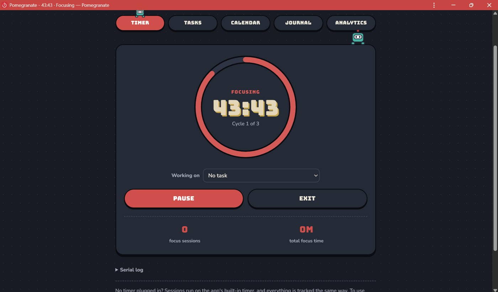

Pomegranate started as a control panel for my Pomodoro timer and grew into the one app I use to study: a timer, to-do list, calendar, journal and productivity tracker, synced across my laptop, iPhone and iPad.

It's a web app that installs like a regular app, with five tabs:
- Timer: Pomodoro sessions on my USB timer, or on a timer built into the app
- Tasks: a to-do list with quick add, so typing "Lab report fri p1 d4 #ECE140" sets the due date, priority, difficulty and course in one go
- Calendar: what's due each day, plus that day's productivity score and rating
- Journal: a few lines about the day and a rating out of 10
- Analytics: my focus, break and desk time compared with yesterday and last week
The interesting parts were the ones you can't see: talking to hardware from a browser, keeping time on a phone that keeps falling asleep, and keeping several devices in step.
Talking to a USB timer from a browser
I made Pomegranate a website instead of a desktop program because of the Web Serial API, which lets Chrome and Edge open a USB port directly with no drivers. The whole app is just a GitHub Pages link, and pressing Connect opens the browser's port picker.
The timer sends its full state as one line of text every second, like "state=FOCUS left=1342 cycle=2". Data arrives over USB in random-sized chunks, so the app buffers it and only handles a message once it sees a newline. Each line is split into key/value pairs, and the entire screen is redrawn from that. Pressing Pause just sends PAUSE, and the timer's next update changes the screen. The app never decides what state the timer is in, it only shows what the timer tells it.
A timer without the timer
On my phone there's no USB timer to plug in. Rather than rewrite the app to handle "no device" everywhere, I wrote a software copy of the Arduino timer that runs inside the app and speaks the exact same protocol. It takes the same commands and sends back the same state lines, into the same code. The countdown ring, task tracking and analytics can't tell whether real hardware is connected.
The catch is that browsers slow down timers in background tabs, sometimes to once a minute, and phones pause web apps completely. A timer that counted ticks would fall behind as soon as I switched apps. So the built-in timer stores when each phase ends, not how much time is left. Whenever the app wakes up, it replays every change that should have happened since, timing each new phase from when the last one should have ended. Even if my phone sleeps through a whole break, the timer is exactly right when I open it.
Scoring a study session
Since the app sees every update, it files each second under focus, break, or paused. From that, every session gets a score out of 100 from three parts:
- Completion: did I finish all the cycles or check off a task? If not, how much of the planned focus did I do?
- Efficiency: how much of my desk time was focus, compared with what the plan allows. A 25/5 plan can only ever be 83% focus, so 83% counts as perfect and long pauses pull it down.
- Intensity: how hard the tasks were. Every task has a difficulty from 1 to 5, and focus on harder tasks counts for more.
The daily score mixes focus time against a daily goal, how much of the day's tasks got done, and the average session score. If a part has nothing to measure, like a day with no tasks due, it's dropped and the rest are scaled up, so a day isn't punished for something that didn't apply.
Syncing between devices
Everything is saved in the browser first, so the app works offline. Signing in with Google mirrors it to Firebase Firestore, a cloud database that pushes changes to every connected device.
Tasks and journal entries sync by "newest change wins", and deleting something leaves a small marker behind so the item doesn't come back from another device. Study time can't work that way: if my laptop and phone both logged time on the same day, one would overwrite the other. So each device keeps its own totals, and Analytics adds them up.
A running session is shared too. It's one cloud document holding the timer's state, and because every time in it is absolute ("focus ends at 3:42:10 PM"), each device counts down on its own clock without sending updates every second. I can start a session on my laptop and pause it from my phone. Only the device that started a session records it, so 25 minutes doesn't get counted three times, and if the USB timer is plugged into my laptop, a pause from my phone is passed through to the Arduino.
Alerts when the app is closed
I wanted a notification on my phone whenever a focus block or break ended, but a paused web app can't send one itself. So a small Firebase cloud function runs whenever the shared session changes, works out every phase ending still to come, and schedules a Cloud Task for each one at that exact time. When a task fires, it sends a Web Push notification, which works on iPhones as long as the app is added to the Home Screen.
The tricky part was pausing. Instead of hunting down and cancelling scheduled alerts, every change to the session gets a new random ID. When an alert fires, it checks that the ID still matches, and skips itself if it doesn't. Pausing doesn't cancel anything, it just makes the old alerts stale.
Pomegranate is built with JavaScript, the Web Serial API, Firebase (Firestore, Cloud Functions and Cloud Tasks) and Web Push, hosted on GitHub Pages. I designed and built it solo.